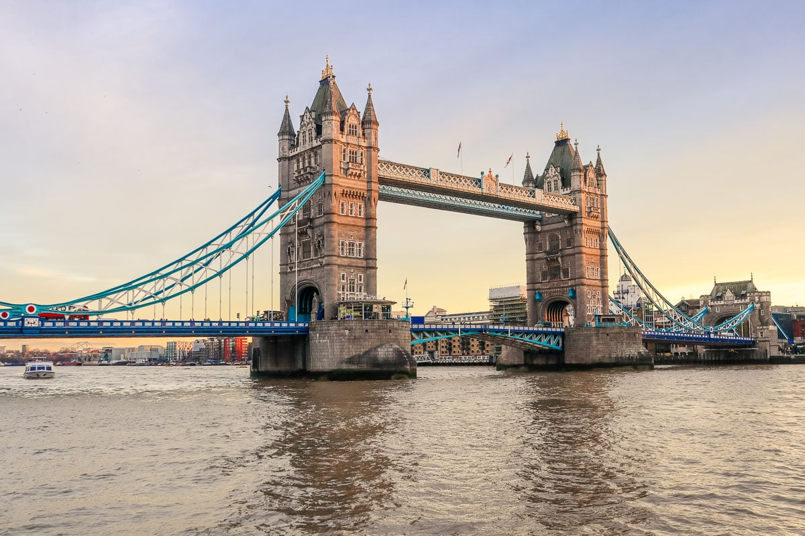

Several bridges named London Bridge have spanned the River Thames between the City of London and Southwark, in central London. The current crossing, which opened to traffic in 1973, is a box girder bridge built from concrete and steel. It replaced a 19th-century stone-arched bridge, which in turn superseded a 600-year-old stone-built medieval structure. This was preceded by a succession of timber bridges, the first of which was built by the Roman founders of London.
The current bridge stands at the western end of the Pool of London and is positioned 30 metres (98 ft) upstream from previous alignments. The approaches to the medieval bridge were marked by the church of St Magnus-the-Martyr on the northern bank and by Southwark Cathedral on the southern shore. Until Putney Bridge opened in 1729, London Bridge was the only road crossing of the Thames downstream of Kingston upon Thames. London Bridge has been depicted in its several forms, in art, literature, and songs, including the nursery rhyme "London Bridge Is Falling Down", and the epic poem The Waste Land by T. S. Eliot.
The modern bridge is owned and maintained by Bridge House Estates, an independent charity of medieval origin overseen by the City of London Corporation. It carries the A3 road, which is maintained by the Greater London Authority.[1] The crossing also delineates an area along the southern bank of the River Thames, between London Bridge and Tower Bridge, that has been designated as a business improvement district.[2]